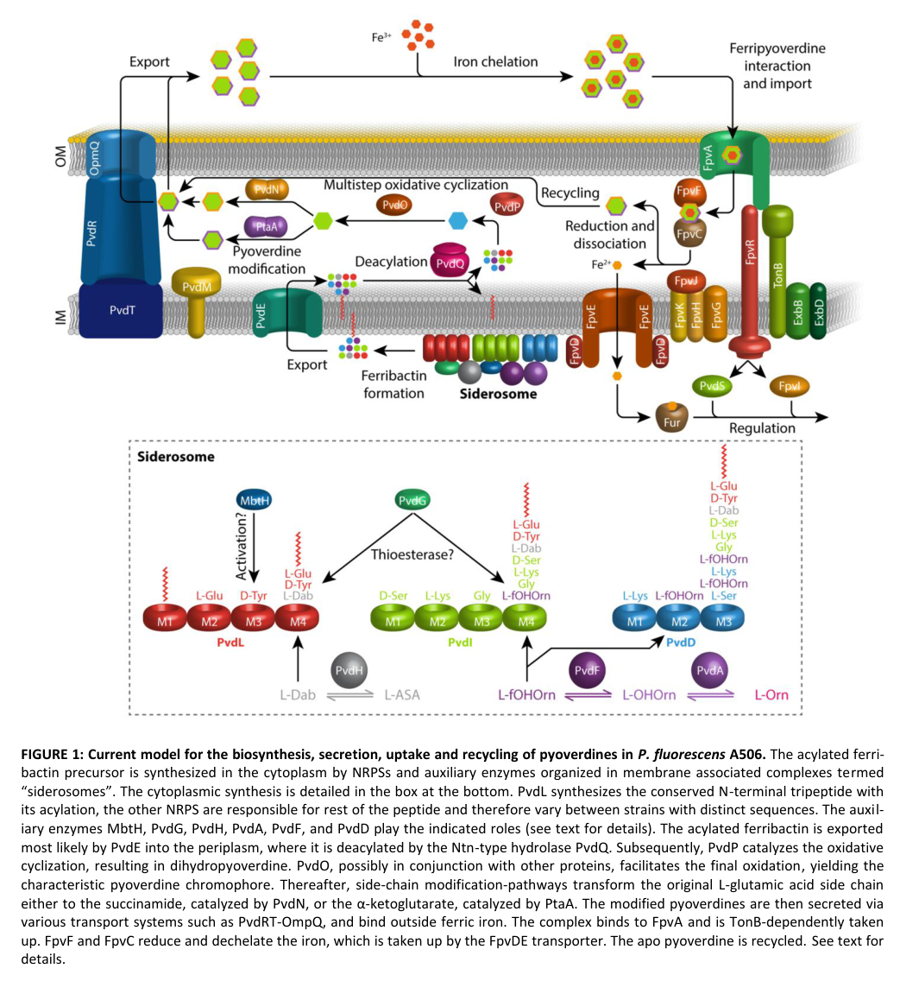

pvdH encodes diaminobutyrate-2-oxoglutarate transaminase, a PLP-dependent aminotransferase that supplies L-2,4-diaminobutyrate for the pyoverdine chromophore/peptide biosynthetic pathway. Its core role is precursor biosynthesis for pyoverdine siderophore production.
| GO Term | Evidence | Action | Reason |
|---|---|---|---|
|
GO:0008483
transaminase activity
|
IEA
GO_REF:0000002 |
KEEP AS NON CORE |
Summary: Generic transaminase activity is correct but less specific than the L-2,4-diaminobutyrate:2-oxoglutarate transaminase term. Falcon deep research confirms PvdH is a class-III PLP-dependent aminotransferase whose physiologically relevant activity is the specific L-Dab-forming transamination, so the generic parent is best retained as non-core.
Reason: Retain the broad parent as non-core while using GO:0045303 for the specific catalytic role.
Supporting Evidence:
file:PSEPK/pvdH/pvdH-uniprot.txt
SubName: Full=Diaminobutyrate-2-oxoglutarate transaminase
file:PSEPK/pvdH/pvdH-uniprot.txt
DR GO; GO:0045303; F:diaminobutyrate-2-oxoglutarate transaminase activity
PMID:15317763
PvdH was found to catalyze an aminotransferase reaction, interconverting aspartate beta-semialdehyde and l-2,4-diaminobutyrate
file:PSEPK/pvdH/pvdH-deep-research-falcon.md
an **Aminotrans_3 / class-III PLP-dependent aminotransferase** (EC **2.6.1.76**)
|
|
GO:0030170
pyridoxal phosphate binding
|
IEA
GO_REF:0000002 |
KEEP AS NON CORE |
Summary: Pyridoxal phosphate binding is expected for this aminotransferase but is a cofactor annotation rather than the core function. Falcon deep research notes that the class III (Aminotrans_3) family uses PLP bound at the small/large domain interface via a Schiff base to a conserved catalytic lysine, supporting the inferred PLP-binding annotation.
Reason: Retain as non-core support for the PLP-dependent transaminase mechanism.
Supporting Evidence:
file:PSEPK/pvdH/pvdH-uniprot.txt
Name=pyridoxal 5'-phosphate
file:PSEPK/pvdH/pvdH-deep-research-falcon.md
covalently linked (Schiff base) to a **conserved lysine**, a hallmark of PLP aminotransferases
|
|
GO:0045303
L-2,4-diaminobutyrate:2-oxoglutarate transaminase activity
|
IEA
GO_REF:0000003 |
ACCEPT |
Summary: The specific diaminobutyrate-2-oxoglutarate transaminase activity is the core molecular function of PvdH. Falcon deep research confirms PvdH interconverts L-aspartate-beta-semialdehyde (L-ASA) and L-2,4-diaminobutyrate (L-Dab); the canonical EC 2.6.1.76 reaction is L-2,4-diaminobutyrate + 2-oxoglutarate -> L-aspartate-beta-semialdehyde + L-glutamate, used physiologically in the L-Dab-forming direction.
Reason: UniProt EC mapping and direct PvdH biochemical work support the aminotransferase reaction that produces L-2,4-diaminobutyrate.
Supporting Evidence:
file:PSEPK/pvdH/pvdH-uniprot.txt
SubName: Full=Diaminobutyrate-2-oxoglutarate transaminase
file:PSEPK/pvdH/pvdH-uniprot.txt
DR GO; GO:0045303; F:diaminobutyrate-2-oxoglutarate transaminase activity
PMID:15317763
PvdH was found to catalyze an aminotransferase reaction, interconverting aspartate beta-semialdehyde and l-2,4-diaminobutyrate
file:PSEPK/pvdH/pvdH-deep-research-falcon.md
PvdH catalyzes an aminotransferase reaction interconverting L‑aspartate‑β‑semialdehyde (L‑ASA) and L‑2,4‑diaminobutyrate (L‑Dab)
|
|
GO:0002049
pyoverdine biosynthetic process
|
IC
PMID:15317763 Functional characterization of an aminotransferase required ... |
NEW |
Summary: PvdH supplies L-2,4-diaminobutyrate required for pyoverdine biosynthesis. Falcon deep research places PvdH among the cytoplasmic auxiliary enzymes (with PvdA and PvdF) that generate the non-proteinogenic amino-acid building blocks (L-Dab) incorporated into the ferribactin/pyoverdine NRPS precursor under iron limitation.
Reason: PvdH mutants in the experimentally characterized Pseudomonas system fail to synthesize pyoverdine without L-2,4-diaminobutyrate supplementation, and KT2440 produces pyoverdine. The locus mapping pvdH = PP_4223 in KT2440 is explicitly confirmed in the deep research, so the pathway role is transferable to this strain.
Supporting Evidence:
PMID:15317763
Both pvdH and asd (encoding aspartate beta-semialdehyde dehydrogenase) knockout mutants of Pseudomonas aeruginosa PAO1 were unable to synthesize pyoverdine
PMID:19459056
P. putida KT2440 showed that this strain produces an already characterised pyoverdine
file:PSEPK/pvdH/pvdH-deep-research-falcon.md
PvdH supplies **L-Dab** used during nonribosomal assembly of the ferribactin precursor
file:PSEPK/pvdH/pvdH-deep-research-falcon.md
maps **pvdH** to **PP_4223** in *P. putida* KT2440
|
Q: Does KT2440 PvdH have the same substrate specificity and pathway essentiality as the biochemically characterized Pseudomonas aeruginosa enzyme?
Suggested experts: Pyoverdine biosynthesis experts
Experiment: Delete or deplete KT2440 pvdH and test pyoverdine production rescue by L-2,4-diaminobutyrate supplementation.
Type: genetic complementation assay
The research report should be a detailed narrative explaining the function, biological processes, and localization of the gene product. Citations should be given for all claims.
You should prioritize authoritative reviews and primary scientific literature when conducting research. You can supplement
this with annotations you find in gene/protein databases, but these can be outdated or inaccurate.
We are specifically interested in the primary function of the gene - for enzymes, what reaction is catalyzed, and what is the substrate specificity? For transporters, what is the substrate? For structural proteins or adapters, what is the broader structural role? For signaling molecules, what is the role in the pathway.
We are interested in where in or outside the cell the gene product carries out its function.
We are also interested in the signaling or biochemical pathways in which the gene functions. We are less interested in broad pleiotropic effects, except where these elucidate the precise role.
Include evidence where possible. We are interested in both experimental evidence as well as inference from structure, evolution, or bioinformatic analysis. Precise studies should be prioritized over high-throughput, where available.
UniProt Q88F75 in Pseudomonas putida KT2440 is annotated as diaminobutyrate-2-oxoglutarate transaminase (gene pvdH, locus PP_4223), an Aminotrans_3 / class-III PLP-dependent aminotransferase (EC 2.6.1.76) that supplies L-2,4-diaminobutyrate (L‑Dab) for pyoverdine (fluorescent siderophore) biosynthesis. Across authoritative pyoverdine reviews and primary studies in fluorescent pseudomonads, PvdH is consistently defined as the enzyme producing L‑Dab from L‑aspartate‑β‑semialdehyde (L‑ASA) during the cytoplasmic stage of ferribactin/pyoverdine precursor assembly, prior to periplasmic maturation and secretion. (schalk2013pyoverdinebiosynthesisand pages 3-5, schalk2020anoverviewof pages 4-6, dell’anno2022novelinsightson pages 8-9)
A key limitation for this specific KT2440 protein is that direct biochemical characterization (kinetics, substrate panel) of PP_4223 itself was not retrieved from accessible full texts in this run; the functional annotation therefore relies on (i) high-confidence pathway conservation and (ii) established EC 2.6.1.76 chemistry and Aminotrans_3 structural principles. (schalk2025bacterialsiderophoresdiversity pages 4-7, rausch2013crystalstructureof pages 6-8, rausch2013crystalstructureof pages 3-4)
A comparative regulatory-systems analysis table explicitly maps pvdH to PP_4223 in P. putida KT2440 (and to PA2413 in P. aeruginosa), matching the user-provided UniProt locus and confirming that the symbol “pvdH” in the siderophore literature corresponds to the KT2440 gene of interest. (udaondo2025transcriptionalregulatorysystems pages 20-22)
In pyoverdine biosynthesis literature, PvdH is the aminotransferase that produces L‑Dab, a non-proteinogenic residue incorporated into the pyoverdine/ferribactin peptide backbone. (schalk2013pyoverdinebiosynthesisand pages 3-5, schalk2020anoverviewof pages 4-6, dell’anno2022novelinsightson pages 8-9)
This matches UniProt Q88F75’s description as diaminobutyrate-2-oxoglutarate transaminase (EC 2.6.1.76) and membership in a PLP-dependent aminotransferase family (Aminotrans_3/class III), which is the expected enzyme class for this transamination chemistry. (rausch2013crystalstructureof pages 6-8, rausch2013crystalstructureof pages 3-4)
PvdH is an aminotransferase that supplies L‑2,4-diaminobutyrate (L‑Dab) used as a building block for the nonribosomal peptide precursor of pyoverdine. (schalk2020anoverviewof pages 4-6, schalk2013pyoverdinebiosynthesisand pages 3-5)
Pyoverdines are fluorescent siderophores produced by fluorescent pseudomonads; their biosynthesis begins with assembly of a ferribactin (pyoverdine precursor) peptide in the cytoplasm, followed by periplasmic maturation to the fluorescent chromophore and secretion. (ringel2018thebiosynthesisof pages 1-3, schalk2020anoverviewof pages 4-6)
Multiple reviews describe pyoverdine biosynthesis as compartmentalized: cytoplasmic/inner-membrane-associated assembly of an acylated precursor by NRPSs and auxiliary enzymes, followed by export to the periplasm for maturation. This organized biosynthetic machinery is often discussed as a membrane-associated multienzyme complex (“siderosome”). (schalk2020anoverviewof pages 4-6, schalk2020anoverviewof pages 12-13, ringel2018thebiosynthesisof pages 3-5)
An authoritative review of pyoverdine biosynthesis states that PvdH catalyzes an aminotransferase reaction interconverting L‑aspartate‑β‑semialdehyde (L‑ASA) and L‑2,4‑diaminobutyrate (L‑Dab). (schalk2013pyoverdinebiosynthesisand pages 3-5)
A broader class-III aminotransferase structural/phylogenetic analysis explicitly states the EC 2.6.1.76 chemistry (in the context of Acinetobacter DABA-AT): L‑2,4‑diaminobutyrate + α‑ketoglutarate → L‑aspartate‑β‑semialdehyde + L‑glutamate. This provides the canonical donor/acceptor pair associated with EC 2.6.1.76. (rausch2013crystalstructureof pages 3-4)
Together, these support the standard annotation for KT2440 PvdH (Q88F75): a PLP-dependent transamination that supplies L‑Dab for pyoverdine precursor biosynthesis. (schalk2020anoverviewof pages 4-6, dell’anno2022novelinsightson pages 8-9)
Although not all pyoverdine pathway reviews explicitly restate the cofactor for PvdH, the enzyme family assignment to class III (Aminotrans_3) PLP-dependent aminotransferases strongly supports pyridoxal-5′-phosphate (PLP) dependence. Structural work on class III aminotransferases shows PLP bound at the interface of small and large domains and covalently linked (Schiff base) to a conserved lysine, a hallmark of PLP aminotransferases. (rausch2013crystalstructureof pages 6-8, rausch2013crystalstructureof pages 1-2)
Within pyoverdine biogenesis, PvdH’s biologically relevant specificity is production of L‑Dab from L‑ASA (and the reciprocal direction using α‑ketoglutarate as acceptor), enabling incorporation of L‑Dab into the NRPS-assembled peptide. (schalk2020anoverviewof pages 4-6, schalk2013pyoverdinebiosynthesisand pages 3-5)
General structural determinants of substrate selectivity in class III aminotransferases include a two-pocket model (S and L pockets) and conserved residues controlling recognition and stereoselectivity; these principles provide a mechanistic basis for expecting defined ω-amino acid handling in PvdH-like enzymes, but do not replace direct KT2440 enzyme assays. (rausch2013crystalstructureof pages 6-8, rausch2013crystalstructureof pages 8-11)
Pyoverdine precursor assembly is described as a cytoplasmic process (often associated with the cytoplasmic face of the inner membrane), while maturation occurs in the periplasm after export. In this framework, PvdH is placed among cytoplasmic auxiliary enzymes that supply atypical amino acids before periplasmic processing. (ringel2018thebiosynthesisof pages 1-3, schalk2020anoverviewof pages 4-6, ringel2018thebiosynthesisof pages 3-5)
A Nature Reviews Microbiology article further notes that while PvdH is the aminotransferase synthesizing L‑Dab, direct data on PvdH localization/association are not available, emphasizing that some aspects of its physical organization remain inferential. (schalk2025bacterialsiderophoresdiversity pages 4-7)
A widely cited biosynthesis review (with a pathway schematic) depicts cytoplasmic “siderosome” steps that include PvdH-mediated L‑Dab production, followed by PvdE-mediated export of the acylated precursor to the periplasm and subsequent periplasmic maturation steps. (ringel2018thebiosynthesisof media 6478c406, ringel2018thebiosynthesisof pages 3-5)
Downstream periplasmic maturation includes deacylation by PvdQ and oxidative steps involving PvdP and PvdO to generate the fluorescent chromophore. (ringel2018thebiosynthesisof pages 3-5, dell’anno2022novelinsightson pages 8-9)
Pyoverdine genes are described as tightly regulated by iron. Under iron-replete conditions, Fur–Fe²⁺ represses iron-acquisition and siderophore genes; under iron limitation, repression is relieved, enabling expression of the pyoverdine biosynthesis machinery and positive feedback loops. (schalk2020anoverviewof pages 12-13, ringel2018thebiosynthesisof pages 7-8)
This evidence is pathway-level; gene-specific experiments for pvdH/PP_4223 regulation in P. putida KT2440 were not retrieved in the accessible texts during this run. (schalk2020anoverviewof pages 12-13, udaondo2025transcriptionalregulatorysystems pages 20-22)
A 2024 study used single-molecule and super-resolution microscopy approaches to resolve how NRPSs involved in pyoverdine peptide assembly organize in cells under iron limitation. The study notes that PvdH (with PvdA and PvdF) provides modified amino acids for the pathway, and focuses on organization and interactions among NRPSs (PvdL, PvdI, PvdJ, PvdD). (manko2024pvdlorchestratesthe pages 2-5)
Quantitatively, FLIM-FRET and DNA-PAINT analyses reported measurable proximity/interaction for specific NRPS pairs (e.g., PvdL–PvdD FRET efficiency 0.13; PvdL–PvdI 0.04), and partial co-localization metrics (median Mander’s overlap coefficients up to ~0.6 for PvdL/PvdI). These findings strengthen the current model that pyoverdine synthesis occurs in organized, membrane-associated assemblies, providing an updated cellular context for where PvdH-produced L‑Dab is consumed by NRPSs. (manko2024pvdlorchestratesthe pages 8-10, manko2024pvdlorchestratesthe pages 10-11)
A 2022 review reports Gallium-68-labelled pyoverdine for PET imaging of Pseudomonas infections, showing specific accumulation in infected tissues. The same review describes “Trojan Horse” antibiotic delivery strategies, including early pyoverdine–ampicillin conjugates active against ampicillin-resistant P. aeruginosa, and notes development of pyoverdine analogues suitable for conjugation to antibiotic moieties. (dell’anno2022novelinsightson pages 12-13)
The review also summarizes antivirulence approaches targeting pyoverdine pathways, including compounds that quench pyoverdine fluorescence and affect pyoverdine-dependent gene expression, and enzymatic inhibitors (e.g., PvdP-directed inhibition) as strategies to reduce siderophore-mediated virulence. (dell’anno2022novelinsightson pages 12-13)
A recent Nature Reviews Microbiology article (published 2025; DOI indicates 2024 online release) lists broad application areas for siderophores including agriculture (biofertilizers/biopesticides), bioremediation, metal recovery, and medical applications, and provides examples where siderophore-producing microbes suppress pathogens or chelate environmental metals/radionuclides. (schalk2025bacterialsiderophoresdiversity pages 12-14)
A 2022 review emphasizes that real-world exploitation of pyoverdines is limited by analytical and production constraints, arguing that improved high-throughput identification and “microbial cell factories” are critical for broader biotechnological deployment. (dell’anno2022novelinsightson pages 19-20)
A transcriptomic study of P. aeruginosa grown in trauma-patient blood versus healthy volunteer blood reports that nine pyoverdine biosynthesis/transport genes were significantly downregulated by ~1.6- to 2.3-fold, with pvdS down by 1.6-fold, in a context where trauma-patient serum iron was significantly higher than in healthy volunteers. The table includes a pvdH entry among reported locus-level values. (elmassry2019pseudomonasaeruginosaalters pages 11-13)
A separate table of Log2 fold changes reports strong upregulation of many pyoverdine genes, including pvdH Log2FC = 5.6, alongside pvdS (5.7) and multiple biosynthesis/transport genes. (krell2021histamineabacterial pages 4-5)
Quantitative NRPS interaction and co-localization values from 2024 (FRET efficiencies; Mander overlap coefficients) support a physically organized assembly environment for precursor synthesis. These measurements do not assay PvdH directly but constrain the spatial context in which PvdH-produced L‑Dab is utilized. (manko2024pvdlorchestratesthe pages 8-10)
| Entity | Annotation for PvdH (UniProt Q88F75; gene pvdH/PP_4223) | Evidence / citation |
|---|---|---|
| Organism context | Pseudomonas putida KT2440 (ordered locus PP_4223) ortholog of the pyoverdine-biosynthetic aminotransferase PvdH; literature support for function is strongest from conserved Pseudomonas pyoverdine studies, with reviews explicitly discussing P. putida KT2440 pyoverdine organization and PvdH as one of the conserved auxiliary enzymes. | Schalk et al., 2020, Environmental Microbiology (https://doi.org/10.1111/1462-2920.14937) (schalk2020anoverviewof pages 4-6, schalk2020anoverviewof pages 12-13) |
| Enzyme name / EC | Diaminobutyrate-2-oxoglutarate transaminase; commonly called PvdH; EC 2.6.1.76. In pyoverdine literature, PvdH is the aminotransferase that supplies L-2,4-diaminobutyrate (L-Dab) for the siderophore peptide. | Schalk & Guillon, 2013, Environmental Microbiology (https://doi.org/10.1111/1462-2920.12013) (schalk2013pyoverdinebiosynthesisand pages 3-5); Schalk, 2025, Nature Reviews Microbiology (https://doi.org/10.1038/s41579-024-01090-6) (schalk2025bacterialsiderophoresdiversity pages 4-7) |
| Catalyzed reaction | PvdH catalyzes the aminotransferase reaction interconverting L-aspartate-β-semialdehyde (L-ASA) and L-2,4-diaminobutyrate (L-Dab). For EC 2.6.1.76 more generally, the reaction is L-2,4-diaminobutyrate + 2-oxoglutarate ⇌ L-aspartate-β-semialdehyde + L-glutamate; in the pyoverdine pathway this is used physiologically in the L-Dab-forming direction. | Schalk & Guillon, 2013 (https://doi.org/10.1111/1462-2920.12013) (schalk2013pyoverdinebiosynthesisand pages 3-5); Rausch et al., 2013 (https://doi.org/10.1002/prot.24233) (rausch2013crystalstructureof pages 3-4); Dell’Anno et al., 2022 (https://doi.org/10.3390/ijms231911507) (dell’anno2022novelinsightson pages 8-9) |
| Cofactor / family | Predicted and annotated as a PLP-dependent class III aminotransferase (Aminotrans_3 family). Class III aminotransferases use pyridoxal 5'-phosphate (PLP) bound via a conserved catalytic lysine in a homodimeric fold; this family assignment supports PLP dependence for PvdH/Q88F75. | Rausch et al., 2013, Proteins (https://doi.org/10.1002/prot.24233) (rausch2013crystalstructureof pages 13-14, rausch2013crystalstructureof pages 6-8, rausch2013crystalstructureof pages 1-2) |
| Substrate specificity / biochemical role | Functional specificity in siderophore biosynthesis is the production of L-Dab, a non-proteinogenic amino acid incorporated into the conserved ferribactin/pyoverdine precursor peptide. Reviews consistently identify PvdH, together with PvdA and PvdF, as the enzymes that generate unusual amino acid building blocks for pyoverdine assembly. | Schalk & Guillon, 2013 (https://doi.org/10.1111/1462-2920.12013) (schalk2013pyoverdinebiosynthesisand pages 3-5); Ringel & Brüser, 2018 (https://doi.org/10.15698/mic2018.10.649) (ringel2018thebiosynthesisof pages 1-3, ringel2018thebiosynthesisof pages 3-5); Schalk et al., 2020 (https://doi.org/10.1111/1462-2920.14937) (schalk2020anoverviewof pages 4-6) |
| Pathway role | Upstream cytoplasmic biosynthetic enzyme in pyoverdine/ferribactin biosynthesis. PvdH supplies L-Dab used during nonribosomal assembly of the ferribactin precursor; after export to the periplasm, later enzymes such as PvdQ, PvdP, and PvdO complete pyoverdine maturation. | Ringel & Brüser, 2018 (https://doi.org/10.15698/mic2018.10.649) (ringel2018thebiosynthesisof pages 1-3, ringel2018thebiosynthesisof pages 3-5, ringel2018thebiosynthesisof media 6478c406); Dell’Anno et al., 2022 (https://doi.org/10.3390/ijms231911507) (dell’anno2022novelinsightson pages 8-9) |
| Cellular compartment | Best-supported localization is cytoplasmic, likely acting in the inner-membrane-associated siderosome / cytoplasmic face of the inner membrane where early pyoverdine precursor assembly occurs. Reviews note that direct localization data for PvdH itself are limited, but it is placed among the cytoplasmic auxiliary enzymes active before periplasmic maturation. | Ringel & Brüser, 2018 (https://doi.org/10.15698/mic2018.10.649) (ringel2018thebiosynthesisof pages 1-3, ringel2018thebiosynthesisof pages 3-5); Schalk et al., 2020 (https://doi.org/10.1111/1462-2920.14937) (schalk2020anoverviewof pages 4-6, schalk2020anoverviewof pages 12-13); Schalk, 2025 (https://doi.org/10.1038/s41579-024-01090-6) (schalk2025bacterialsiderophoresdiversity pages 4-7) |
| Regulation | Pyoverdine biosynthetic genes in fluorescent pseudomonads are broadly controlled by iron availability. Fur-Fe²⁺ represses pyoverdine/iron-acquisition genes under iron-replete conditions; under iron limitation this repression is relieved, allowing basal expression and activation via pyoverdine regulatory circuitry including PvdS in pseudomonads. Direct gene-specific regulatory experiments for P. putida pvdH/PP_4223 were not identified here, so this is pathway-level inference. | Schalk et al., 2020 (https://doi.org/10.1111/1462-2920.14937) (schalk2020anoverviewof pages 12-13); Ringel & Brüser, 2018 (https://doi.org/10.15698/mic2018.10.649) (ringel2018thebiosynthesisof pages 7-8); Schalk, 2025 (https://doi.org/10.1038/s41579-024-01090-6) (schalk2025bacterialsiderophoresdiversity pages 4-7) |
| Evidence strength / caveat | Identity is consistent: pvdH in pyoverdine literature denotes the L-Dab-supplying aminotransferase, matching UniProt Q88F75 annotation (diaminobutyrate-2-oxoglutarate transaminase). However, most direct biochemical characterization cited is from other Pseudomonas species or general EC 2.6.1.76 family studies rather than a dedicated biochemical paper on P. putida KT2440 PP_4223 itself. | Schalk & Guillon, 2013 (https://doi.org/10.1111/1462-2920.12013) (schalk2013pyoverdinebiosynthesisand pages 3-5); Schalk et al., 2020 (https://doi.org/10.1111/1462-2920.14937) (schalk2020anoverviewof pages 4-6); Dell’Anno et al., 2022 (https://doi.org/10.3390/ijms231911507) (dell’anno2022novelinsightson pages 8-9) |
Table: This table summarizes the most relevant functional annotation for PvdH/PP_4223 in Pseudomonas putida KT2440, including reaction, cofactor, pathway role, localization, and regulation. It is useful as a compact evidence map linking UniProt annotation to the pyoverdine biosynthesis literature.
| Metric category | Pair / comparison | Quantitative data | Interpretation / note | Source |
|---|---|---|---|---|
| FRET-FLIM | PvdL–PvdJ | Donor/acceptor lifetimes: 2.3 ns / 2.3 ns; FRET efficiency: 0.00 | No detectable interaction signal in this assay; reflects NRPS organization, not PvdH directly | Manko et al., 2024, IJMS, https://doi.org/10.3390/ijms25116013 (manko2024pvdlorchestratesthe pages 8-10) |
| FRET-FLIM | PvdJ–PvdL (reciprocal construct) | Donor/acceptor lifetimes: 2.3 ns / 2.3 ns; FRET efficiency: 0.00 | Reciprocal measurement also showed no detectable FRET; concerns NRPS spatial proximity rather than PvdH function | Manko et al., 2024, IJMS, https://doi.org/10.3390/ijms25116013 (manko2024pvdlorchestratesthe pages 8-10) |
| FRET-FLIM | PvdL–PvdD | Donor/acceptor lifetimes: 2.3 ns / 2.0 ns; FRET efficiency: 0.13 | Detectable interaction/proximity in live cells; supports PvdL-centered NRPS assembly model | Manko et al., 2024, IJMS, https://doi.org/10.3390/ijms25116013 (manko2024pvdlorchestratesthe pages 8-10) |
| FRET-FLIM | PvdL–PvdI | Donor/acceptor lifetimes: 2.3 ns / 2.2 ns; FRET efficiency: 0.04 | Weak but measurable proximity; indicates partial interaction within pyoverdine biosynthetic machinery | Manko et al., 2024, IJMS, https://doi.org/10.3390/ijms25116013 (manko2024pvdlorchestratesthe pages 8-10) |
| DNA-PAINT co-localization | PvdL / PvdJ | Median Mander’s overlap coefficients (M1/M2): ~0.30 / ~0.30 | Partial co-localization; IQRs reported in paper but not fully extractable from available excerpt | Manko et al., 2024, IJMS, https://doi.org/10.3390/ijms25116013 (manko2024pvdlorchestratesthe pages 8-10) |
| DNA-PAINT co-localization | PvdJ / PvdL (reciprocal) | Median Mander’s overlap coefficients (M1/M2): ~0.20 / ~0.25 | Partial reciprocal overlap; quantitative support for non-identical but overlapping NRPS distributions | Manko et al., 2024, IJMS, https://doi.org/10.3390/ijms25116013 (manko2024pvdlorchestratesthe pages 8-10) |
| DNA-PAINT co-localization | PvdL / PvdD | Median Mander’s overlap coefficient: ~0.40 | Greater overlap than with PvdJ; consistent with FRET-detected PvdL–PvdD interaction | Manko et al., 2024, IJMS, https://doi.org/10.3390/ijms25116013 (manko2024pvdlorchestratesthe pages 8-10) |
| DNA-PAINT co-localization | PvdL / PvdI | Median Mander’s overlap coefficient: ~0.60 | Highest overlap among listed pairs; supports close spatial association in NRPS ensemble | Manko et al., 2024, IJMS, https://doi.org/10.3390/ijms25116013 (manko2024pvdlorchestratesthe pages 8-10) |
| Qualitative spatial organization | Free fractions of NRPSs | PvdI, PvdJ, PvdD: mainly cytoplasmic diffusion; PvdL: almost exclusively inner-membrane-associated; all share a very low-mobility diffusion regime | Spatial organization data are informative for the pyoverdine assembly environment in which auxiliary enzymes such as PvdH operate, but they do not measure PvdH directly | Manko et al., 2024, IJMS, https://doi.org/10.3390/ijms25116013 (manko2024pvdlorchestratesthe pages 2-5, manko2024pvdlorchestratesthe pages 10-11, manko2024pvdlorchestratesthe pages 1-2) |
Table: This table compiles quantitative single-molecule measurements from Manko et al. 2024 relevant to the spatial organization of pyoverdine biosynthesis. These metrics inform the membrane-associated NRPS assembly context surrounding PvdH’s pathway role, although they do not directly assay PvdH itself.
A pathway schematic showing the cytoplasmic “siderosome” stage (including the PvdH step for L‑Dab production) and downstream periplasmic maturation is available from Ringel & Brüser (2018). (ringel2018thebiosynthesisof media 6478c406)
References
(schalk2013pyoverdinebiosynthesisand pages 3-5): Isabelle J. Schalk and Laurent Guillon. Pyoverdine biosynthesis and secretion in pseudomonas aeruginosa: implications for metal homeostasis. Environmental microbiology, 15 6:1661-73, Jun 2013. URL: https://doi.org/10.1111/1462-2920.12013, doi:10.1111/1462-2920.12013. This article has 296 citations and is from a domain leading peer-reviewed journal.
(schalk2020anoverviewof pages 4-6): Isabelle J. Schalk, Coraline Rigouin, and Julien Godet. An overview of siderophore biosynthesis among fluorescent pseudomonads and new insights into their complex cellular organization. Environmental Microbiology, 22:1447-1466, Feb 2020. URL: https://doi.org/10.1111/1462-2920.14937, doi:10.1111/1462-2920.14937. This article has 121 citations and is from a domain leading peer-reviewed journal.
(dell’anno2022novelinsightson pages 8-9): Filippo Dell’Anno, Giovanni Andrea Vitale, Carmine Buonocore, Laura Vitale, Fortunato Palma Esposito, Daniela Coppola, Gerardo Della Sala, Pietro Tedesco, and Donatella de Pascale. Novel insights on pyoverdine: from biosynthesis to biotechnological application. International Journal of Molecular Sciences, 23:11507, Sep 2022. URL: https://doi.org/10.3390/ijms231911507, doi:10.3390/ijms231911507. This article has 40 citations.
(schalk2025bacterialsiderophoresdiversity pages 4-7): Isabelle J. Schalk. Bacterial siderophores: diversity, uptake pathways and applications. Nature reviews. Microbiology, 23:24-40, Sep 2025. URL: https://doi.org/10.1038/s41579-024-01090-6, doi:10.1038/s41579-024-01090-6. This article has 211 citations.
(rausch2013crystalstructureof pages 6-8): Christian Rausch, Alexandra Lerchner, André Schiefner, and Arne Skerra. Crystal structure of the ω‐aminotransferase from paracoccus denitrificans and its phylogenetic relationship with other class iii amino‐ transferases that have biotechnological potential. Proteins: Structure, 81:774-787, May 2013. URL: https://doi.org/10.1002/prot.24233, doi:10.1002/prot.24233. This article has 69 citations.
(rausch2013crystalstructureof pages 3-4): Christian Rausch, Alexandra Lerchner, André Schiefner, and Arne Skerra. Crystal structure of the ω‐aminotransferase from paracoccus denitrificans and its phylogenetic relationship with other class iii amino‐ transferases that have biotechnological potential. Proteins: Structure, 81:774-787, May 2013. URL: https://doi.org/10.1002/prot.24233, doi:10.1002/prot.24233. This article has 69 citations.
(udaondo2025transcriptionalregulatorysystems pages 20-22): Zulema Udaondo, Kelsey Aguirre Schilder, Ana Rosa Márquez Blesa, Mireia Tena-Garitaonaindia, José Canto Mangana, and Abdelali Daddaoua. Transcriptional regulatory systems in pseudomonas: a comparative analysis of helix-turn-helix domains and two-component signal transduction networks. International Journal of Molecular Sciences, 26:4677, May 2025. URL: https://doi.org/10.3390/ijms26104677, doi:10.3390/ijms26104677. This article has 1 citations.
(ringel2018thebiosynthesisof pages 1-3): Michael T. Ringel and Thomas Brüser. The biosynthesis of pyoverdines. Microbial Cell, 5:424-437, Oct 2018. URL: https://doi.org/10.15698/mic2018.10.649, doi:10.15698/mic2018.10.649. This article has 195 citations.
(schalk2020anoverviewof pages 12-13): Isabelle J. Schalk, Coraline Rigouin, and Julien Godet. An overview of siderophore biosynthesis among fluorescent pseudomonads and new insights into their complex cellular organization. Environmental Microbiology, 22:1447-1466, Feb 2020. URL: https://doi.org/10.1111/1462-2920.14937, doi:10.1111/1462-2920.14937. This article has 121 citations and is from a domain leading peer-reviewed journal.
(ringel2018thebiosynthesisof pages 3-5): Michael T. Ringel and Thomas Brüser. The biosynthesis of pyoverdines. Microbial Cell, 5:424-437, Oct 2018. URL: https://doi.org/10.15698/mic2018.10.649, doi:10.15698/mic2018.10.649. This article has 195 citations.
(rausch2013crystalstructureof pages 1-2): Christian Rausch, Alexandra Lerchner, André Schiefner, and Arne Skerra. Crystal structure of the ω‐aminotransferase from paracoccus denitrificans and its phylogenetic relationship with other class iii amino‐ transferases that have biotechnological potential. Proteins: Structure, 81:774-787, May 2013. URL: https://doi.org/10.1002/prot.24233, doi:10.1002/prot.24233. This article has 69 citations.
(rausch2013crystalstructureof pages 8-11): Christian Rausch, Alexandra Lerchner, André Schiefner, and Arne Skerra. Crystal structure of the ω‐aminotransferase from paracoccus denitrificans and its phylogenetic relationship with other class iii amino‐ transferases that have biotechnological potential. Proteins: Structure, 81:774-787, May 2013. URL: https://doi.org/10.1002/prot.24233, doi:10.1002/prot.24233. This article has 69 citations.
(ringel2018thebiosynthesisof media 6478c406): Michael T. Ringel and Thomas Brüser. The biosynthesis of pyoverdines. Microbial Cell, 5:424-437, Oct 2018. URL: https://doi.org/10.15698/mic2018.10.649, doi:10.15698/mic2018.10.649. This article has 195 citations.
(ringel2018thebiosynthesisof pages 7-8): Michael T. Ringel and Thomas Brüser. The biosynthesis of pyoverdines. Microbial Cell, 5:424-437, Oct 2018. URL: https://doi.org/10.15698/mic2018.10.649, doi:10.15698/mic2018.10.649. This article has 195 citations.
(manko2024pvdlorchestratesthe pages 2-5): Hanna Manko, Tania Steffan, Véronique Gasser, Yves Mély, Isabelle Schalk, and Julien Godet. Pvdl orchestrates the assembly of the nonribosomal peptide synthetases involved in pyoverdine biosynthesis in pseudomonas aeruginosa. International Journal of Molecular Sciences, 25:6013, May 2024. URL: https://doi.org/10.3390/ijms25116013, doi:10.3390/ijms25116013. This article has 6 citations.
(manko2024pvdlorchestratesthe pages 8-10): Hanna Manko, Tania Steffan, Véronique Gasser, Yves Mély, Isabelle Schalk, and Julien Godet. Pvdl orchestrates the assembly of the nonribosomal peptide synthetases involved in pyoverdine biosynthesis in pseudomonas aeruginosa. International Journal of Molecular Sciences, 25:6013, May 2024. URL: https://doi.org/10.3390/ijms25116013, doi:10.3390/ijms25116013. This article has 6 citations.
(manko2024pvdlorchestratesthe pages 10-11): Hanna Manko, Tania Steffan, Véronique Gasser, Yves Mély, Isabelle Schalk, and Julien Godet. Pvdl orchestrates the assembly of the nonribosomal peptide synthetases involved in pyoverdine biosynthesis in pseudomonas aeruginosa. International Journal of Molecular Sciences, 25:6013, May 2024. URL: https://doi.org/10.3390/ijms25116013, doi:10.3390/ijms25116013. This article has 6 citations.
(dell’anno2022novelinsightson pages 12-13): Filippo Dell’Anno, Giovanni Andrea Vitale, Carmine Buonocore, Laura Vitale, Fortunato Palma Esposito, Daniela Coppola, Gerardo Della Sala, Pietro Tedesco, and Donatella de Pascale. Novel insights on pyoverdine: from biosynthesis to biotechnological application. International Journal of Molecular Sciences, 23:11507, Sep 2022. URL: https://doi.org/10.3390/ijms231911507, doi:10.3390/ijms231911507. This article has 40 citations.
(schalk2025bacterialsiderophoresdiversity pages 12-14): Isabelle J. Schalk. Bacterial siderophores: diversity, uptake pathways and applications. Nature reviews. Microbiology, 23:24-40, Sep 2025. URL: https://doi.org/10.1038/s41579-024-01090-6, doi:10.1038/s41579-024-01090-6. This article has 211 citations.
(dell’anno2022novelinsightson pages 19-20): Filippo Dell’Anno, Giovanni Andrea Vitale, Carmine Buonocore, Laura Vitale, Fortunato Palma Esposito, Daniela Coppola, Gerardo Della Sala, Pietro Tedesco, and Donatella de Pascale. Novel insights on pyoverdine: from biosynthesis to biotechnological application. International Journal of Molecular Sciences, 23:11507, Sep 2022. URL: https://doi.org/10.3390/ijms231911507, doi:10.3390/ijms231911507. This article has 40 citations.
(elmassry2019pseudomonasaeruginosaalters pages 11-13): Moamen M. Elmassry, Nithya S. Mudaliar, Kameswara Rao Kottapalli, Sharmila Dissanaike, John A. Griswold, Michael J. San Francisco, Jane A. Colmer-Hamood, and Abdul N. Hamood. Pseudomonas aeruginosa alters its transcriptome related to carbon metabolism and virulence as a possible survival strategy in blood from trauma patients. Aug 2019. URL: https://doi.org/10.1128/msystems.00312-18, doi:10.1128/msystems.00312-18. This article has 19 citations and is from a peer-reviewed journal.
(krell2021histamineabacterial pages 4-5): Tino Krell, José A. Gavira, Félix Velando, Matilde Fernández, Amalia Roca, Elizabet Monteagudo-Cascales, and Miguel A. Matilla. Histamine: a bacterial signal molecule. International Journal of Molecular Sciences, 22:6312, Jun 2021. URL: https://doi.org/10.3390/ijms22126312, doi:10.3390/ijms22126312. This article has 46 citations.
(rausch2013crystalstructureof pages 13-14): Christian Rausch, Alexandra Lerchner, André Schiefner, and Arne Skerra. Crystal structure of the ω‐aminotransferase from paracoccus denitrificans and its phylogenetic relationship with other class iii amino‐ transferases that have biotechnological potential. Proteins: Structure, 81:774-787, May 2013. URL: https://doi.org/10.1002/prot.24233, doi:10.1002/prot.24233. This article has 69 citations.
(manko2024pvdlorchestratesthe pages 1-2): Hanna Manko, Tania Steffan, Véronique Gasser, Yves Mély, Isabelle Schalk, and Julien Godet. Pvdl orchestrates the assembly of the nonribosomal peptide synthetases involved in pyoverdine biosynthesis in pseudomonas aeruginosa. International Journal of Molecular Sciences, 25:6013, May 2024. URL: https://doi.org/10.3390/ijms25116013, doi:10.3390/ijms25116013. This article has 6 citations.

id: Q88F75
gene_symbol: pvdH
product_type: PROTEIN
status: DRAFT
taxon:
id: NCBITaxon:160488
label: Pseudomonas putida (strain ATCC 47054 / DSM 6125 / CFBP 8728 / NCIMB 11950 / KT2440)
description: pvdH encodes diaminobutyrate-2-oxoglutarate transaminase, a PLP-dependent aminotransferase
that supplies L-2,4-diaminobutyrate for the pyoverdine chromophore/peptide biosynthetic pathway. Its
core role is precursor biosynthesis for pyoverdine siderophore production.
existing_annotations:
- term:
id: GO:0008483
label: transaminase activity
evidence_type: IEA
original_reference_id: GO_REF:0000002
review:
summary: Generic transaminase activity is correct but less specific than the L-2,4-diaminobutyrate:2-oxoglutarate
transaminase term. Falcon deep research confirms PvdH is a class-III PLP-dependent
aminotransferase whose physiologically relevant activity is the specific L-Dab-forming
transamination, so the generic parent is best retained as non-core.
action: KEEP_AS_NON_CORE
reason: Retain the broad parent as non-core while using GO:0045303 for the specific catalytic role.
supported_by:
- reference_id: file:PSEPK/pvdH/pvdH-uniprot.txt
supporting_text: 'SubName: Full=Diaminobutyrate-2-oxoglutarate transaminase'
- reference_id: file:PSEPK/pvdH/pvdH-uniprot.txt
supporting_text: DR GO; GO:0045303; F:diaminobutyrate-2-oxoglutarate transaminase activity
- reference_id: PMID:15317763
supporting_text: PvdH was found to catalyze an aminotransferase reaction, interconverting aspartate
beta-semialdehyde and l-2,4-diaminobutyrate
reference_section_type: ABSTRACT
- reference_id: file:PSEPK/pvdH/pvdH-deep-research-falcon.md
supporting_text: an **Aminotrans_3 / class-III PLP-dependent aminotransferase** (EC **2.6.1.76**)
reference_section_type: OTHER
- term:
id: GO:0030170
label: pyridoxal phosphate binding
evidence_type: IEA
original_reference_id: GO_REF:0000002
review:
summary: Pyridoxal phosphate binding is expected for this aminotransferase but is a cofactor annotation
rather than the core function. Falcon deep research notes that the class III (Aminotrans_3)
family uses PLP bound at the small/large domain interface via a Schiff base to a conserved
catalytic lysine, supporting the inferred PLP-binding annotation.
action: KEEP_AS_NON_CORE
reason: Retain as non-core support for the PLP-dependent transaminase mechanism.
supported_by:
- reference_id: file:PSEPK/pvdH/pvdH-uniprot.txt
supporting_text: Name=pyridoxal 5'-phosphate
- reference_id: file:PSEPK/pvdH/pvdH-deep-research-falcon.md
supporting_text: covalently linked (Schiff base) to a **conserved lysine**, a hallmark of PLP aminotransferases
reference_section_type: OTHER
- term:
id: GO:0045303
label: L-2,4-diaminobutyrate:2-oxoglutarate transaminase activity
evidence_type: IEA
original_reference_id: GO_REF:0000003
review:
summary: The specific diaminobutyrate-2-oxoglutarate transaminase activity is the core molecular function
of PvdH. Falcon deep research confirms PvdH interconverts L-aspartate-beta-semialdehyde
(L-ASA) and L-2,4-diaminobutyrate (L-Dab); the canonical EC 2.6.1.76 reaction is
L-2,4-diaminobutyrate + 2-oxoglutarate -> L-aspartate-beta-semialdehyde + L-glutamate,
used physiologically in the L-Dab-forming direction.
action: ACCEPT
reason: UniProt EC mapping and direct PvdH biochemical work support the aminotransferase reaction
that produces L-2,4-diaminobutyrate.
supported_by:
- reference_id: file:PSEPK/pvdH/pvdH-uniprot.txt
supporting_text: 'SubName: Full=Diaminobutyrate-2-oxoglutarate transaminase'
- reference_id: file:PSEPK/pvdH/pvdH-uniprot.txt
supporting_text: DR GO; GO:0045303; F:diaminobutyrate-2-oxoglutarate transaminase activity
- reference_id: PMID:15317763
supporting_text: PvdH was found to catalyze an aminotransferase reaction, interconverting aspartate
beta-semialdehyde and l-2,4-diaminobutyrate
reference_section_type: ABSTRACT
- reference_id: file:PSEPK/pvdH/pvdH-deep-research-falcon.md
supporting_text: PvdH catalyzes an aminotransferase reaction interconverting L‑aspartate‑β‑semialdehyde
(L‑ASA) and L‑2,4‑diaminobutyrate (L‑Dab)
reference_section_type: OTHER
- term:
id: GO:0002049
label: pyoverdine biosynthetic process
evidence_type: IC
original_reference_id: PMID:15317763
review:
summary: PvdH supplies L-2,4-diaminobutyrate required for pyoverdine biosynthesis. Falcon deep
research places PvdH among the cytoplasmic auxiliary enzymes (with PvdA and PvdF) that
generate the non-proteinogenic amino-acid building blocks (L-Dab) incorporated into the
ferribactin/pyoverdine NRPS precursor under iron limitation.
action: NEW
reason: PvdH mutants in the experimentally characterized Pseudomonas system fail to synthesize pyoverdine
without L-2,4-diaminobutyrate supplementation, and KT2440 produces pyoverdine. The locus
mapping pvdH = PP_4223 in KT2440 is explicitly confirmed in the deep research, so the
pathway role is transferable to this strain.
supported_by:
- reference_id: PMID:15317763
supporting_text: Both pvdH and asd (encoding aspartate beta-semialdehyde dehydrogenase) knockout
mutants of Pseudomonas aeruginosa PAO1 were unable to synthesize pyoverdine
reference_section_type: ABSTRACT
- reference_id: PMID:19459056
supporting_text: P. putida KT2440 showed that this strain produces an already characterised pyoverdine
reference_section_type: ABSTRACT
- reference_id: file:PSEPK/pvdH/pvdH-deep-research-falcon.md
supporting_text: PvdH supplies **L-Dab** used during nonribosomal assembly of the ferribactin precursor
reference_section_type: OTHER
- reference_id: file:PSEPK/pvdH/pvdH-deep-research-falcon.md
supporting_text: maps **pvdH** to **PP_4223** in *P. putida* KT2440
reference_section_type: OTHER
references:
- id: GO_REF:0000002
title: Gene Ontology annotation through association of InterPro records with GO terms
findings:
- statement: InterPro supplies broad aminotransferase and PLP-binding annotations.
- id: GO_REF:0000003
title: Gene Ontology annotation based on Enzyme Commission mapping
findings:
- statement: EC mapping supplies the specific diaminobutyrate-2-oxoglutarate transaminase term.
- id: file:PSEPK/pvdH/pvdH-uniprot.txt
title: UniProtKB entry for pvdH
findings:
- supporting_text: 'SubName: Full=Diaminobutyrate-2-oxoglutarate transaminase'
reference_section_type: DATABASE_ENTRY
- supporting_text: Name=pyridoxal 5'-phosphate
reference_section_type: DATABASE_ENTRY
- id: PMID:15317763
title: Functional characterization of an aminotransferase required for pyoverdine siderophore biosynthesis
findings:
- supporting_text: interconverting aspartate beta-semialdehyde and l-2,4-diaminobutyrate
reference_section_type: ABSTRACT
- supporting_text: knockout mutants of Pseudomonas aeruginosa PAO1 were unable to synthesize pyoverdine
reference_section_type: ABSTRACT
- id: PMID:19459056
title: Siderophore-mediated iron acquisition in Pseudomonas entomophila L48 and Pseudomonas putida KT2440
findings:
- supporting_text: strain produces an already characterised pyoverdine
reference_section_type: ABSTRACT
- id: file:PSEPK/pvdH/pvdH-deep-research-falcon.md
title: Falcon deep research report for pvdH (Q88F75, PP_4223) in Pseudomonas putida KT2440
findings:
- supporting_text: PvdH is consistently defined as the enzyme producing L‑Dab from L‑aspartate‑β‑semialdehyde
(L‑ASA)
reference_section_type: OTHER
- supporting_text: PvdH catalyzes an aminotransferase reaction interconverting L‑aspartate‑β‑semialdehyde
(L‑ASA) and L‑2,4‑diaminobutyrate (L‑Dab)
reference_section_type: OTHER
- supporting_text: an **Aminotrans_3 / class-III PLP-dependent aminotransferase** (EC **2.6.1.76**)
reference_section_type: OTHER
- supporting_text: maps **pvdH** to **PP_4223** in *P. putida* KT2440
reference_section_type: OTHER
- supporting_text: PvdH is placed among **cytoplasmic auxiliary enzymes** that supply atypical amino
acids before periplasmic processing
reference_section_type: OTHER
- supporting_text: direct data on PvdH localization/association are not available
reference_section_type: OTHER
- supporting_text: PvdH, together with PvdA and PvdF, as the enzymes that generate unusual amino acid
building blocks for pyoverdine assembly
reference_section_type: OTHER
core_functions:
- description: PLP-dependent L-2,4-diaminobutyrate:2-oxoglutarate transaminase supplying a pyoverdine
biosynthetic precursor.
molecular_function:
id: GO:0045303
label: L-2,4-diaminobutyrate:2-oxoglutarate transaminase activity
directly_involved_in:
- id: GO:0002049
label: pyoverdine biosynthetic process
supported_by:
- reference_id: file:PSEPK/pvdH/pvdH-uniprot.txt
supporting_text: 'SubName: Full=Diaminobutyrate-2-oxoglutarate transaminase'
- reference_id: file:PSEPK/pvdH/pvdH-uniprot.txt
supporting_text: DR GO; GO:0045303; F:diaminobutyrate-2-oxoglutarate transaminase activity
- reference_id: PMID:15317763
supporting_text: PvdH was found to catalyze an aminotransferase reaction, interconverting aspartate
beta-semialdehyde and l-2,4-diaminobutyrate
reference_section_type: ABSTRACT
- reference_id: PMID:15317763
supporting_text: Both pvdH and asd (encoding aspartate beta-semialdehyde dehydrogenase) knockout mutants
of Pseudomonas aeruginosa PAO1 were unable to synthesize pyoverdine
reference_section_type: ABSTRACT
- reference_id: PMID:19459056
supporting_text: P. putida KT2440 showed that this strain produces an already characterised pyoverdine
reference_section_type: ABSTRACT
- reference_id: file:PSEPK/pvdH/pvdH-deep-research-falcon.md
supporting_text: PvdH catalyzes an aminotransferase reaction interconverting L‑aspartate‑β‑semialdehyde
(L‑ASA) and L‑2,4‑diaminobutyrate (L‑Dab)
reference_section_type: OTHER
- reference_id: file:PSEPK/pvdH/pvdH-deep-research-falcon.md
supporting_text: PvdH supplies **L-Dab** used during nonribosomal assembly of the ferribactin precursor
reference_section_type: OTHER
proposed_new_terms: []
suggested_questions:
- question: Does KT2440 PvdH have the same substrate specificity and pathway essentiality as the biochemically
characterized Pseudomonas aeruginosa enzyme?
experts:
- Pyoverdine biosynthesis experts
suggested_experiments:
- description: Delete or deplete KT2440 pvdH and test pyoverdine production rescue by L-2,4-diaminobutyrate
supplementation.
experiment_type: genetic complementation assay
{kind=link}